Welcome to JAbsolute! This is a great ear-training Java application, an invaluable tool that will help you develop absolute pitch. The most important thing to keep in mind is to be perseverant. A 20 minute daily practice is all you need. But be consistent, don't miss a day. JAbsolute runs under Java, hence its name. It should work on any plataform supported by the Java Virtual Machine. The application has been tested on Linux, Windows Vista, and MacOS X. The program is in constant development, so please feel free to contact me for suggestions and bug reports.
JAbsolute is a friendly and intuitive program. I’m sure you can learn it right away by just playing around. In this section I'll tell you the basics you need to know to start using your journey to developing absolute pitch with JAbsolute. I'm assuming you already have a working copy of JAbsolute installed on your computer. If that is not the case, please read the installation instrutions that came with the software.
After launching the program, the first thing you need to do is to select a user from the File menu. The program won’t let you do anything, unless one user is selected. If no user is listed in the users area, create a New user. You don’t need a password, just type your name in the dialog box.
The second thing you need to do is to select one mode from the Mode menu. Once you have selected one of the three modes, Test, Practice or Play, you are ready to start your ear-training experience. If you selected Test or Practice modes just press the start button. If you are in Play mode just start playing. In play mode you can also change the color of the keys by pressing the up and down arrows. It is very easy, have fun and enjoy!
As you can see, the main panel consists of five elements that will be discussed in more detail in the following sections. These elements are: The keyboard (1), controls(2), settings(3), time (4) and score(5).
When in play mode, the keyboard can be used to play single notes or chords, just like a piano. You can either use the mouse or the computer's keyboard. By default, keystrokes are assigned to notes as shown in the image.
You can play an octave higher by pressing alt + key. You can
play an octave lower by pressing shift + key. And finally you can
play two octaves lower by pressing alt + shift + key. You can
assign different notes to different letters in the preferences dialog box. When
in test mode or practice
mode, you use the keyboard to answer the exercises. A red key means wrong answer, and a blue key means right answer, and a light blue key means the
right answer was given to you by the
application. Very important note: when the program plays 2 or
more notes at the same time, you have to answer them in order, one at a time,
starting from the lowest note. You cannot continue untill all notes from the
chord have been correctly answered.
The controls panel consists of three buttons: start, repeat and answer. These buttons only work in test and practice modes.
Start. Press this button to start the exercise.
Repeat. Press this button to replay the notes from the last example. You can perform this operation as many times as you need without loosing points.
Answer. If you have no idea what the answer is, press this button. The program will tell you the right answer. Unfortunately you will loose points.
The settings panel contains the parameters needed for each exercise. In practice mode, all settings are enabled and can be modified. In test mode, settings are automatically loaded according to your current level. During play mode, only chord type and instruments parameters are enabled.
Notes per chord. This is the number of notes the program will play at the same time. The program will play for you one or more notes at the same time depending on the number you enter here. In order to use this setting you need to set Chord Type to None.
Time. Sets the duration of the exercise in minutes. The default is 5 minutes.
Chord type. Sets the type of chord to be played by the program. If you choose none, the chord will depend on the number set in Notes per chord. If you choose random, the program will randomly select a chord to be played.
Instrument. You can choose different instruments depending on the sound banks installed on your computer. If you select random, the program will randomly select an instrument each time a note is played. Piano is the default instrument loaded.
Octave sensitive. If this radio button is checked, you will score right only if you guess the exact note and octave that was played to you. In other words, you need to correctly specify the note and octave to get it right. If the radio button is not checked, the answer will be right if you get the right note no matter in which octave you play.
The note chooser. The note chooser tells you which notes are part of the exercise. During practice mode you can select the notes you want the program to randomly play for you.
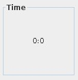
The time panel indicates the remaining time during the test and practice modes. The timer starts immediately after you press the start button. If you try to change modes or terminate the exercise, the program will warn you. You may press esc or select stop test from the File menu. If you don't finish the test, the data will be lost and won't be saved in your history.
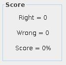
These score panel indicate your scores during test and practice modes. The score shows you how many wrong and right answers you have. In order to pass to the next level you need a score of 90%. However, speed is also important, if you are to slow, even if you have a 100% you will have to repeat your current level.
The File menu is where you manage everything related to users and program’s preferences. JAbsolute is a multi-user program. It keeps track of your improvements. Each user has its own history and level, which you can save in a text file.
You cannot select any menu items from the File menu once your Test or Practice session has started. To stop your session press escape and follow the instructions.
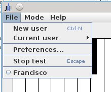
You can create as many users as you want. You don’t need a password, but it is imperative that everybody using this program have their own user account. When selecting New user a dialog appears asking for your user name. If your name is already taken, the program will warn you. After your user account is created you can start working with JAbsolute.
The Curren user submenu contains several menu items.
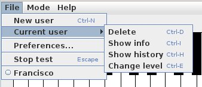
Use the Current user submenu to delete users, view information and history or change user’s level. Make sure a user is selected before you use one of these options. You can verify who the current user is by looking at the users’ area or the title bar. Generally the title bar shows the current user name.
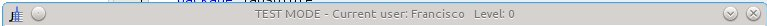
Delete. After you choose delete from the submenu, the program will warn you. If you are sure you want the current user to be deleted, press OK. The user that is currently selected will be deleted.
Show information. To see current user’s information, select this item. A dialog box will appear showing your name, current level, and highest level. The current level and highest level are not always the same, you can change your current level, but it can never be above your highest level. In other words, you can repeat your previous levels if you want, but you cannot skip ahead.
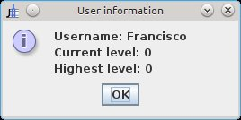
Show history: The program keeps track of all your tests. By selecting this item you can see a list of all your sessions and scores by date. You may also save this information in a text file with the following path and name ProgramDirectory\user.txt. After you save your information the program will tell you the exact path where your file was saved.
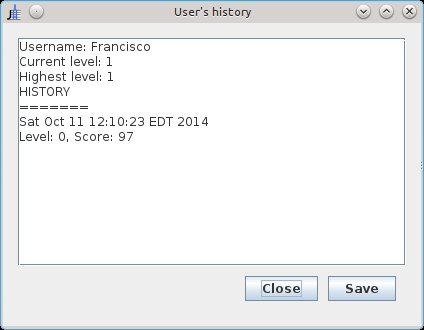
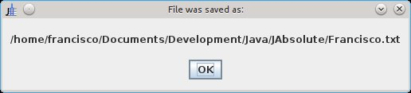
Change level. You can retake any test that you have done before by selecting this menu item. A dialog box will appear, type a number below or equal to your highest level. Changing your level is useful when you stop practicing for a while and you need to catch up.
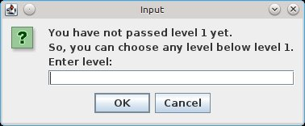
There are two tabs where you can change programs settings: keyboard and chords. A midi settings tab will be added in the future.
Chords. As you can see in the chords
tab there are many available chord types you can use during Practice or
Play modes. You can select the ones that you want from the list on your left
hand side. Hold the ctrl + down while you click on the chord types
you want to use. You will see the selected chords on the right hand side.
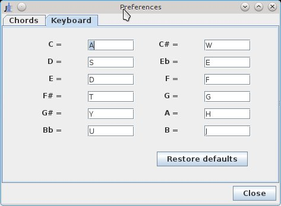
Keyboard. Use this tab to change the keyboard layout. Assign one keystroke to each note. Be careful not to type the same character more than once because the program won’t let you.
Note: The keyboard layout may change in future releases. You can send me your comments about its functionality.
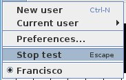
During a practice or test session, it is not advisable to change modes
because the time is running. The program will warn you if you try to change
modes or stop the exercise. If you absolutely need to stop your session, you
can select this menu item or press the esc key on your
computer.
The users area is the one just below the Stop test menu item. If you don’t see any user listed, it means no users exist. In this case you need to create a new user. The illustration shows three users: Frank, John, and Silvie. Sivlie is currently selected. To select a user just click on it and will become the current user. Only one user can be selected at a time.
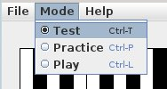
There are three modes available: Test, Practice and Play.
Select this mode if you want to follow the levels suggested by JAbsolute. You will progressively improve your absolute pitch. The program will tell you which level you are in and your score each time you play. The best part is that you cannot go further if you don’t satisfactorily pass each level. In this mode you cannot change any settings, they are always controlled by the program.
Select this mode if you want to have control over the settings. In this mode you are free to practice whatever you feel you need to work on, without the program controlling your learning experience. In this mode, the computer won’t keep track of your sessions.
Select this mode if you only want to play notes, chords, instruments or have
some fun! In this mode you can change instruments and play chords. There is a
very useful feature in this mode. You can change the colors of each key on the
keyboard. To do that, click on the note you want to assign a color to, then
press the up and down keys to change the color.
This is just to help you focus on the idea that pitches are similar than colors in the sense that each one has it own quality that make it recognizable. I recomend that you play each note slowly and try to compare that pitch with a color. Remember, this is just an exercise, you don't need to come up with the same colors every time you perform this experiment, just have fun and look for qualities in the pitches that make them similar to a color.
Let me give you an example. I can say that the note C sounds serious and calm like the color blue. To me, the color dark blue evokes trust, and professionalism. When I hear the note C, it sonds to me like the fahter of the family, a father that you can trust. It is the type of serious, dependable father. This is why, I would assign the color dark blue to the note C. But maybe another day I may change my perception and decide that C is similar than the color green for some reason. I know it sounds kind of subjective and up in the clouds, but it's an invaluable excercise. Plus it's fun!